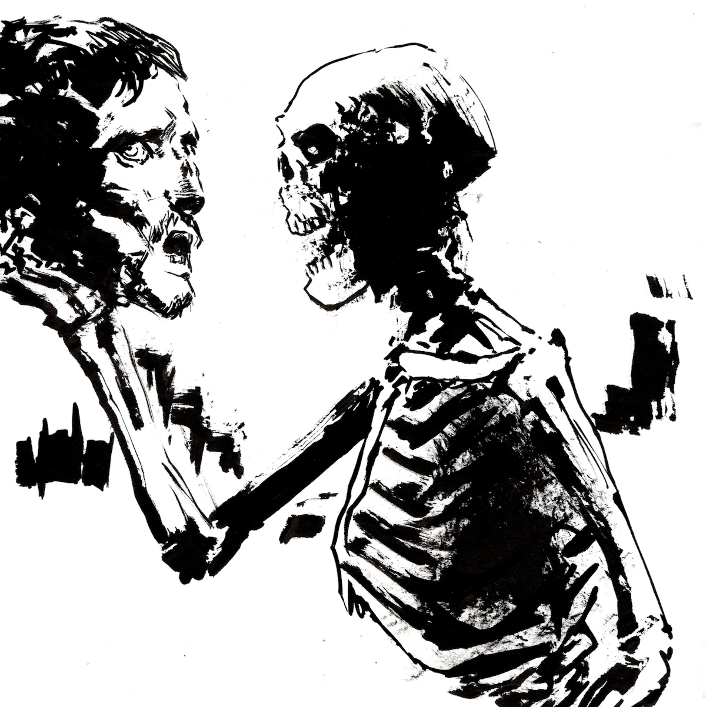
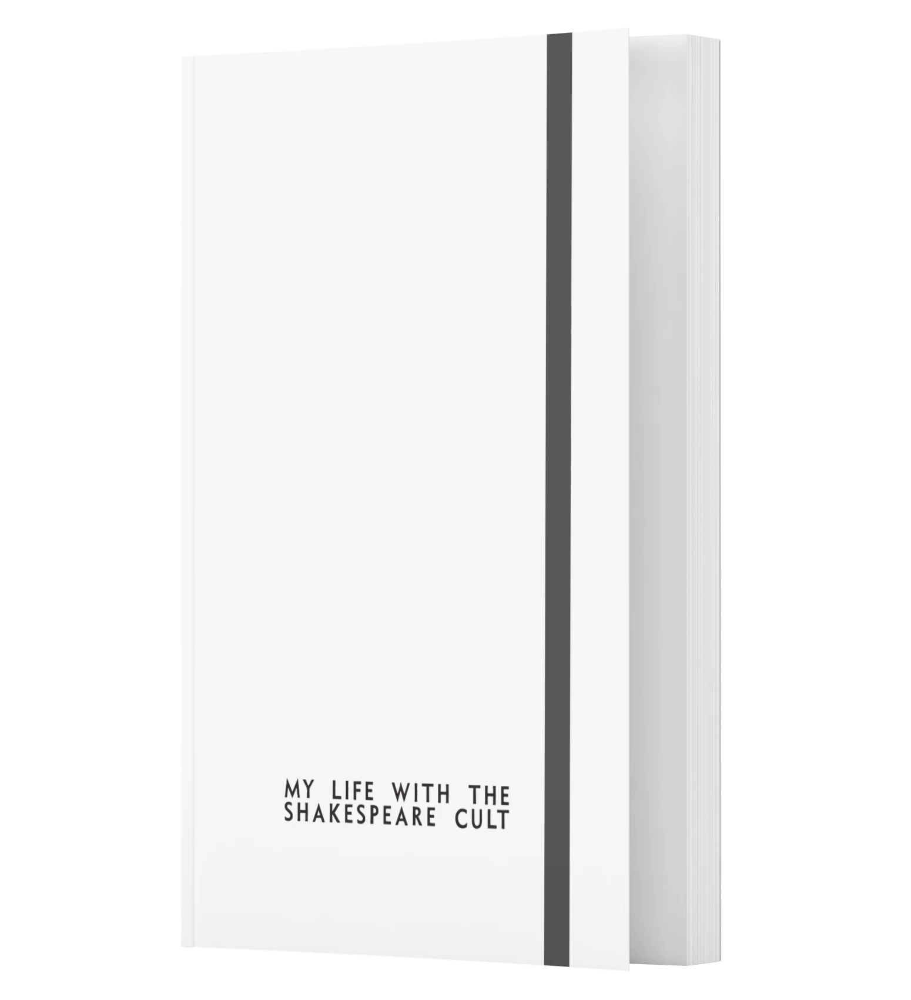

The books that launched a movement are coming back.
Welcome to the cult.
Version 2 of My Life With the Shakespeare Cult and Blueprints for a Shakespare Cult coming in 2027.
A lot of it is much expanded, much revised: more detailed, more practical, folding in another 10 years of Oldschool practice. With in-depth text examples and classroom exercises.

Shakespeare doesn’t have to be bad.
It can be faster, scarier, and better. And it can be a lot of goddamn fun. You only need one rehearsal, and you don’t need a director. You and a handful of other maniacs can throw up your first show in about 8 weeks.
All you need is a knife and a hammer.

My Life with the Shakespeare Cult
The slim little knife of a book that has become an underground classic.
It lays out the case for a better, wilder kind of Shakespeare: the kind that Shakespeare would have recognized.
Because Shakespeare’s theatre was a goddamn madhouse. Losing sight of that was a bad mistake.
Blueprints for a Shakespeare Cult
The Swiss-Army hammer that will help you wreck the conventional Shakespearean theatre, and build something better out of its beams.
Volume 1: advice from the players who built the Oldschool Shakespeare movement.
Volume 2: a complete guide for making your own Oldschool Shakespeare cult.
About the Author
Samuel McClure Taylor co-founded the Back Room Shakespeare Project, the country’s leading Oldschool Shakespeare outfit, in 2011.
Since then he has performed in over 50 Oldschool productions.
Today it has chapters in Chicago, NYC & LA. It helped start a movement that today has outfits producing in a dozen or more places.
Samuel sometimes teaches Shakespeare at the University of Chicago.
He also makes Dungeon Stuff.